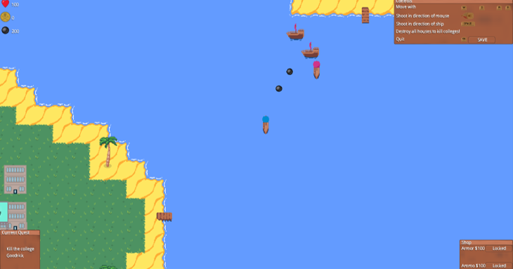
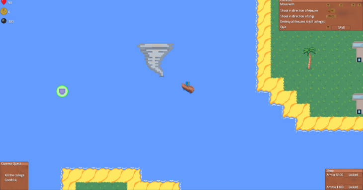
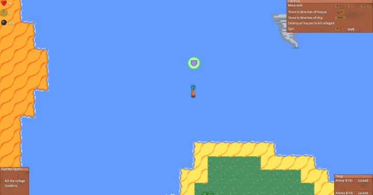
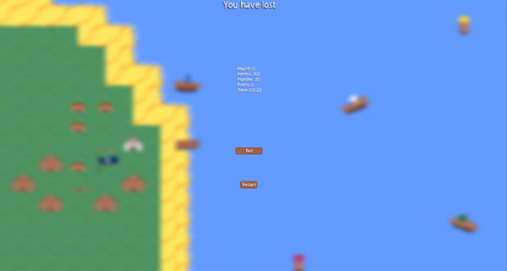

Game Info:
You control a ship sailing the Lake of York and are tasked with fulfilling certain quests along the way.
You use WASD keys to control the direction of the ship. The cannonball can be fired in the direction of the mouse with a left click, or in the direction of the ship with the spacebar.
Finding chests

You may need to follow directions in the prompt to sail around and find and collect a chest.
Destroying colleges

You may be tasked with destroying a given college. You will need to find the college by looking for its respective flag on an island and fire cannonballs to destroy every building on the island.
Fighting Ships
Be warned! Colleges will put up a fight by sending their own ships to take you down. Damage them enough and they will switch sides, fighting for you on your quest to capture all the colleges.
Obstacles
Weather forecasts indicate extra high winds in some areas which may not only be an occupational hazard in itself but may have also angered the local wildlife!
Bonuses
Find Powerups on your journey and spend your hard-earned plunder on extra health and ammo.
Saving
Want to come back later or start afresh? Well now you can with save files and a restart button to get right back into the action!